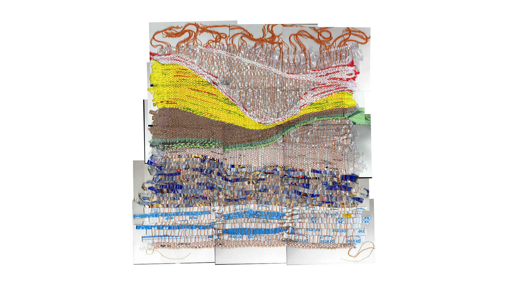
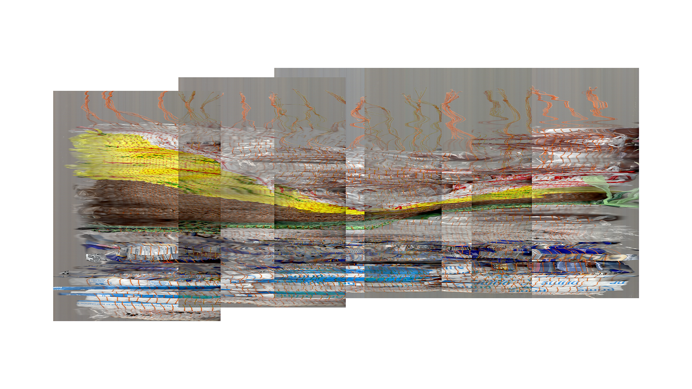
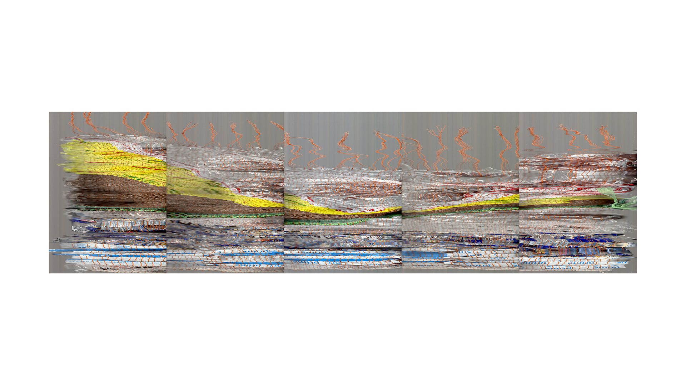
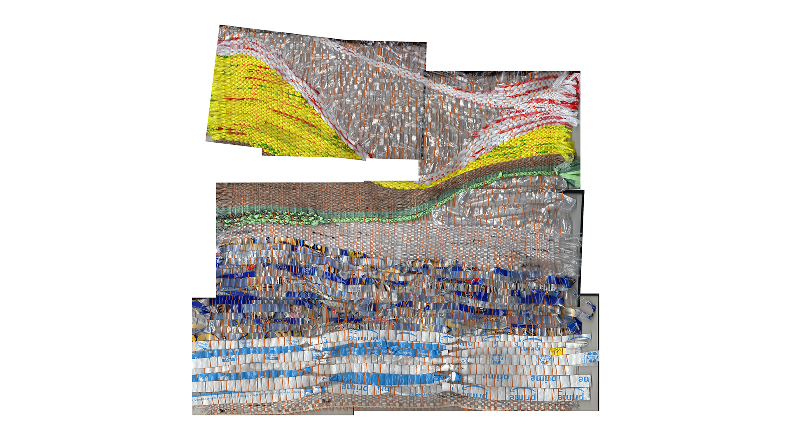
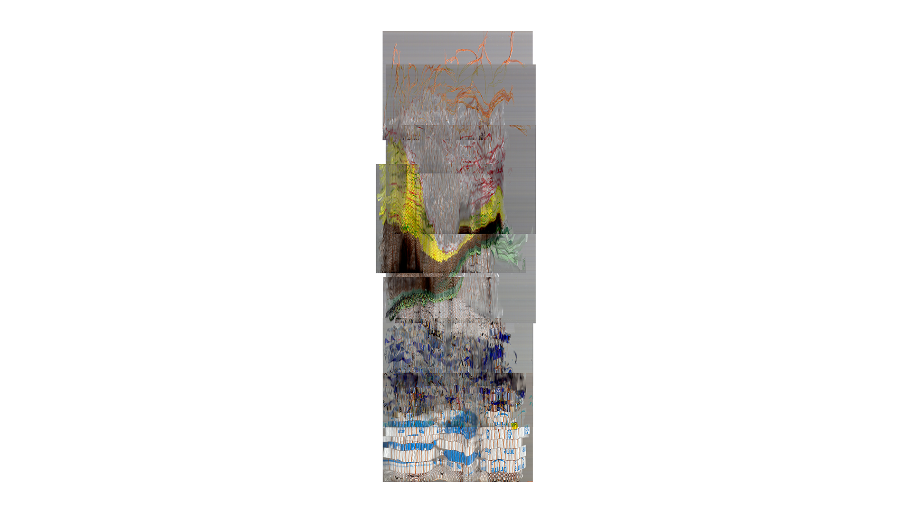

Tapestry Manipulations





I originally scanned this tapestry in parts as a way of documenting it in high quality. I didn't have much documentation equipment at the time. I wanted to use the scans for animation, but that never led to anything. Instead, I chose to put them together in ways that showed the entire tapestry, or what I had of it in scans, but I didn't want it to be entirely legible as the original.
Interested in the way I chose to scan, standing still and moving as the light bar moved across, I got these intensely warped images of the tapestry. I found myself spending time messing around and finding ways to join them together—playing with layering and transparency.
Sketches of distortions and play.
Scans of the tapestry Only Time Makes It Human III.